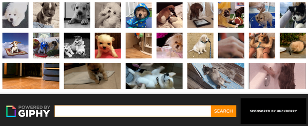
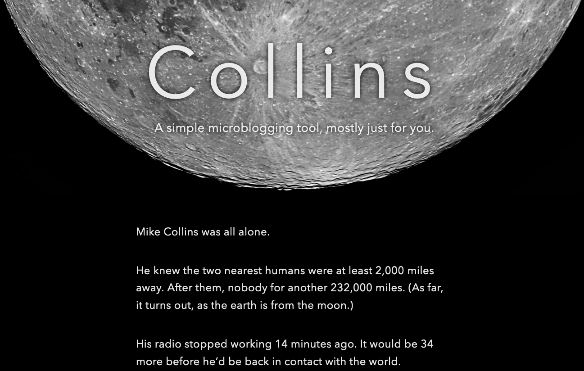
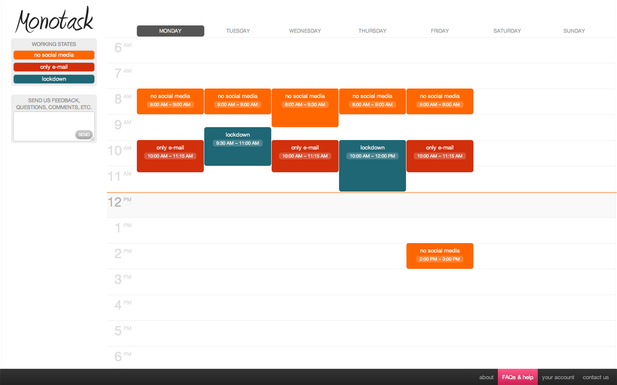
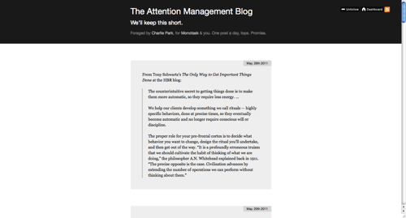
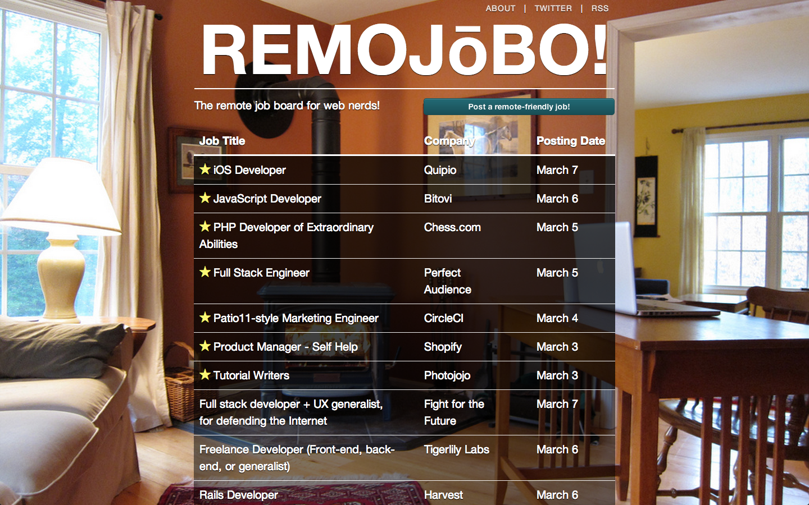
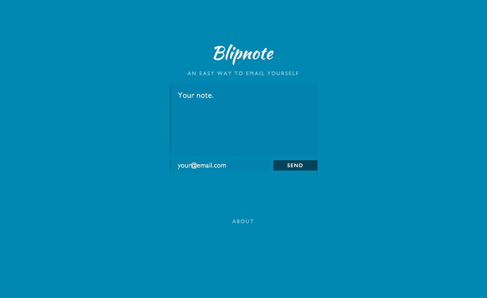
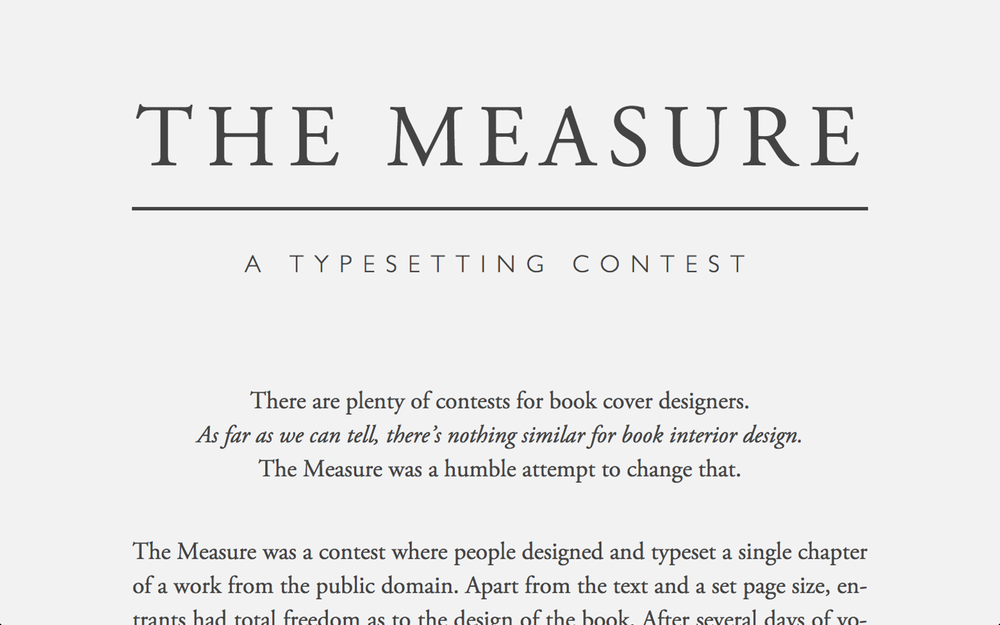
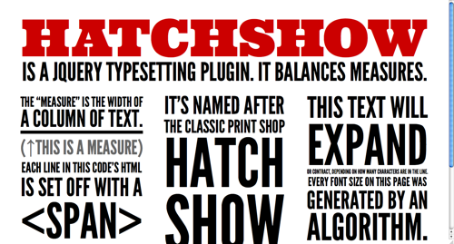
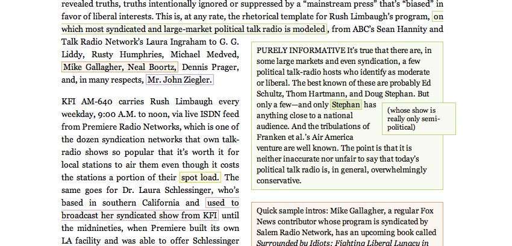
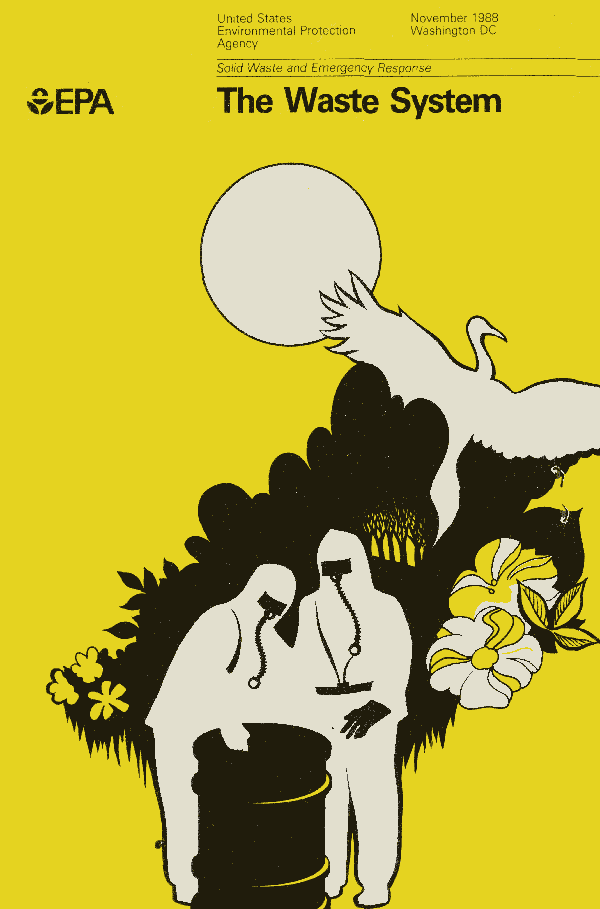

About
I’m an indie web developer, with about 20 years working on the web. Most of that’s been as a front-end engineer at various startups (most recently, Slack) or running my own bootstrapped webapp (what I do now).
I live in San Francisco, CA, with my wife, three daughters, and our mini dachshund, Fern.
Writing
I’m hoping to get my blog back up, but you know how that goes. In the meantime, here are a few things I’ve written.
Slopegraphs: My most-read piece, about an overlooked style of data visualization created by Edward Tufte. After I published it, slopegraph use exploded.
Santa is a Game People Play: How we did Christmas with our kids. It worked well. tl;dr: treat your kids like friends who you want to get in on the joke.
Unity: A recent one. A “preimagining” I wrote before the March 15th Democratic Debate. It didn’t play out like this, and who knows how it’s going to play out in the midst of the pandemic. I’m still clinging to hope that Elizabeth Warren will save us all. But this was one possible (if unlikely) future at the time.
Projects
Many of these are defunct, but were fun, either conceptually or technically. Most of them actually predate my time at Slack (and, before that, IFTTT), so they’re a bit old. Nevertheless, they were fun to build, and I figured I’d share them.
PearBudget
This is an indie webapp I built, originally in Rails, 12 years ago. When I left Slack (fall of 2018) I went back to work on this, solo, to rewrite it from the ground up. I built it this time around in PHP and React (with Hooks, ES6, etc.). Currently still working on the responsive / mobile view, but I thought I’d share it here, since it’s what takes up most of my days.
I wrestle with sharing it, as ① I feel it still has areas I want to improve, and ② it is — by design — incredibly simple. But it’s made a postive impact on the world, and I’m really proud of that. Some examples:
- A mom of an adult son with special needs wrote to say that the PearBudget design was perfect for him to record spending for Social Security purposes. I can’t think of higher praise for a site’s UX design.
- A husband wrote in to comment that PearBudget “practically saved my marriage”. (!)
- A wife (different couple) wrote in, saying “in 10 years of marriage we have never been so aware of our spending”.
There’s a steady stream of notes like that from users. I cherish every one. (Also, how cute is that logo?)→
correctEmailTypos.js
If you run a webapp, you’ve probably seen someone accidentally sign up with an account at gmal.com, or yaho.com, or something similar. Typos in email domains are bad for all parties.
This is a so-basic-it’s-kind-of-clever? script to correct those. It’s not impressive in the least, but ends up being invisibly useful. To me, that’s one of the hallmarks of a good piece of technology. →
Find You A Gif
Again, super-basic. Uses the Giphy API, and ends up being a good deal faster than their own site. Useful for finding just the right GIF for your in-the-moment joke in Slack. I guess this was a JAMStack site, about four years before that was a term. →
Collins
A very basic personal microblog for you to run on your own server. Install one file and it does the rest. You can post to it via the web, curl, or Slack. Technically, it’s a static site generator, but that feels a bit fancy for what amounts to about 300 lines of code.→
Monotask
I’m really interested in how we can better engage in meaningful work. Or, alternately, how we can keep from getting distracted by non-meaningful work. I spent some time working on a startup with a friend, focused on attention management. The core idea: Monotask let you turn off the distracting parts of the internet, so you could do good work.
I was proud of the interface I designed and built, and of the total service we built together. But in the end, we couldn’t get enough paying subscribers to justify the work that was involved in keeping it going. Ironically, Monotask became an object lesson in itself — a distraction from other work that deserved deeper attention than it was getting. So we shut Monotask down.
attnmgmtblog
In line with my interest in attention management (see Monotask, above), this was a tumblelog I kept from 2008 – 2018. Quotes, links, excerpts, and other foraged bits from the web that address focus, distraction, and doing good work. (This was on Tumblr, so isn’t here as an example of my coding; I just found the content.) →
Remojōbo
As a side project, I built a job board for remote folks. This was back in 2013. Someone was interested in buying it, so I sold it and moved on to other things. Unfortunately, it didn’t last too long once they had it.
Blipnote
Back before DMing yourself notes in Slack was a thing, I often wanted to quickly capture notes, ideas, and other content, often while out and about. Blipnote made that super-easy.
Oh, hey. Another JAMStack site from way way before people called them that. A static HTML page, plus some Javascript and the Mailchimp API. Not any more complicated than it needed to be.
The Measure
Early in my career, I was a book designer and editor. I miss that kind of layout / design work. So in 2015, I created a monthly contest for type nerds to contribute the first chapter of a selected public domain work. We got some great submissions! (One example: I think one submission for Dracula used red ink for all of the colons? Fun fun. Spooky stuff.) Anyway, I realized that I was doing more administrative work than design, so I wrapped it up after about three contests.
Beautiful Buttons for Twitter Bootstrappers

Back when Bootstrap was new, I made this as a CSS generator for people wanting better button options. Slide some sliders — for hue / saturation / lightness / puffiness — and some JS generated the relevant CSS. You could copy the CSS and be good to go.
Some Way-Old jQuery Plugins
 Hatchshow and Parentheticals were some jQuery plugins I wrote to help with different layout techniques.
Hatchshow was named after the HATCH SHOW PRINT print shop, who use a similar technique for their posters.
Parentheticals was named after a David Foster Wallace piece in The Atlantic that used his nested footnotes in a really interesting way.
Contact
Shoot me a DM via Twitter.
Colophon
This version of the site was inspired by a 1988 brochure from the EPA’s Solid Waste and Emergency Department. I found it 25 years ago, came across it recently, and feel like it captures both the horror and the hope of the present moment.
It’s a reminder of a kinder, gentler, nobler time, when the US government planned ahead for crises and didn’t kill its citizens through its own gross incompetence.
Colors are
#201c0c,
#e2dfce,
#e5d320
. Fonts are my new favorite, the native sans font stack: system-ui, -apple-system, sans-serif. Art is public domain, courtesy Uncle Sam.
Mountain Goats song you don’t know but should: Last Man On Earth.
Take care of one another.